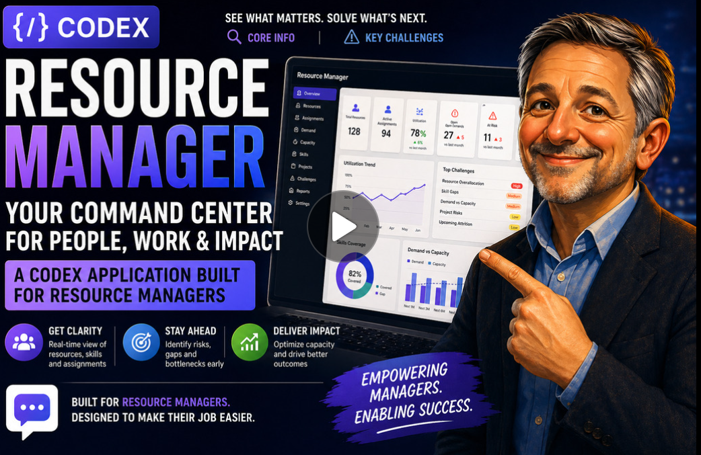
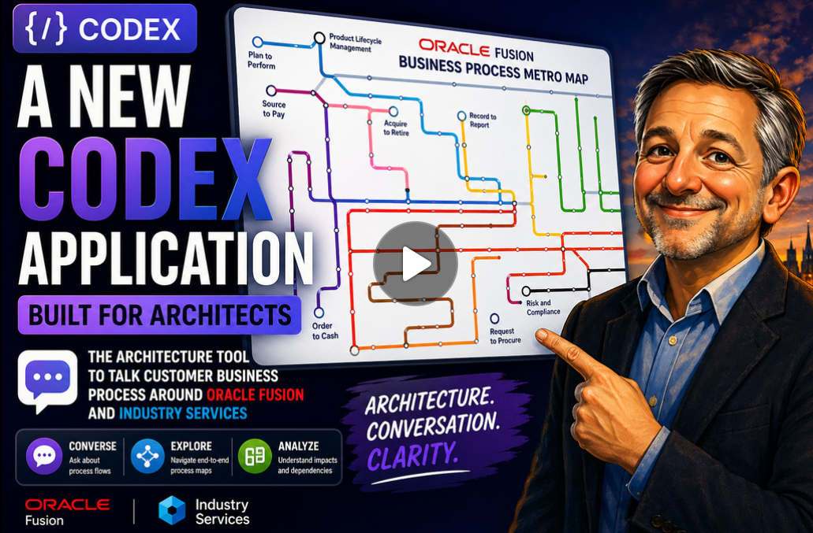

Customer value
Trusted relationships, strategic alignment and visible outcomes.
DELIVERY DIRECTOR · ORACLE CUSTOMER SUCCESS SERVICES
I create customer confidence, delivery control and high-performing teams that turn complex programmes into predictable outcomes.
Open with the role you already play — then make the evidence earn the title.
THE DELIVERY DIRECTOR MANDATE
The job is to make outcomes, people, customers and commercial reality move together — even when the programme is moving fast.
Trusted relationships, strategic alignment and visible outcomes.
Clear governance, risks surfaced early and decisions made in time.
Forecasting, margin awareness and sustainable growth.
Capable teams with clear expectations, support and accountability.
Practical data, automation and AI that make delivery easier.
This frames the interview around the business of delivery, not a chronology of roles.
TRUSTED CUSTOMER LEADERSHIP
My experience spans transformational and high-profile engagements including Oracle Red Bull Racing, Mazda’s first Unity implementation, Premier League and SailGP.
Use a 30–45 second excerpt only, with your own context before and after it.
Set up the customer challenge, your personal contribution, and what trust enabled. Do not let the video tell the story for you.
THE DELIVERY OPERATING SYSTEM
I create a regular rhythm in which the right people can see the same reality — and act on it.
Draw directly on your governance, forecasting, margin and resource-planning experience here.
AI & INNOVATION IN PRACTICE
I use AI and product thinking to make capacity, dependencies and customer process design easier to understand — so teams can act earlier and with greater confidence.


These are not AI experiments: they are recent, working examples of using innovation to remove delivery friction and improve conversations.
THE LEADER BEHIND THE SYSTEM
Make this personal: offer one brief example of how you helped a person or team succeed through a difficult moment.
FIRST 90 DAYS
Learn the role mechanics, delivery health, key accounts, people, skills and pain points.
Establish a strong operating cadence around forecasting, reporting and resource planning.
Land visible quick wins, strengthen relationships and create space for the team to shine.
This reflects your existing plan: protect, support, open doors and deliver on your actions.
THE OPPORTUNITY
I am ready to bring customer leadership, operational control, commercial awareness and an AI-led improvement mindset together for CSS.
Jonathan Banner UKIE Solutions Manager
End with the value you will create, not a generic thank you.